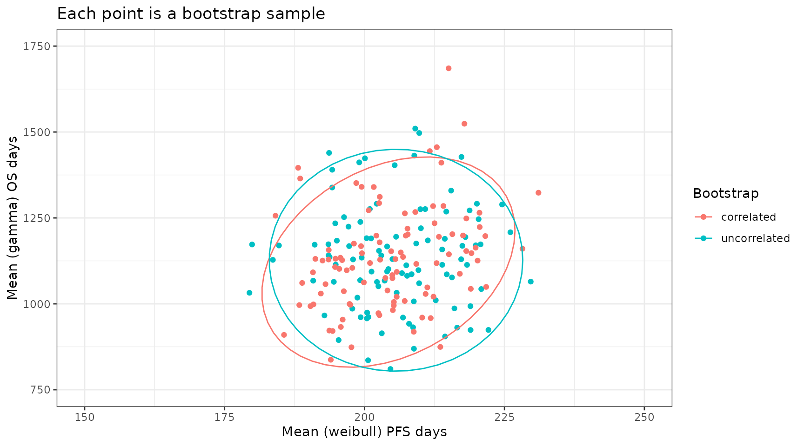

Fitting_models_in_R_bootstrap.RmdParametric survival models are often the preferred method of extrapolating survival in economic modeling. When doing such modeling it is important to account for uncertainty in the estimates.
The flexsurvPlus package allows the handling of uncertainty in estimates primarily through boot strapping. The primary use of these bootstrap samples is to be used in probabilistic sensitivity analyses (PSA) in economic models. This is simpler to execute than the the traditional method in Excel using the variance covariance matrix and the cholesky decomposition as we now just need to sample from a list of parameters.
In addition this enables correlations between different endpoints to be preserved in the excel models. For example, if we expect that time to progression correlates positively with survival, then the random draws should also reflect this correlation, rather than just being drawn independently, which could lead to unrealistic iterations with large OS but minimal PFS, and vice versa. This vignette illustrates this with a simple example.
# Set up packages and data
To perform survival analyses, patient level data is required for the survival endpoints.
This example uses a standard simulated data set (adtte). There is no standard naming that is needed for this package however, there are some set variables that are needed:
In this example, we use overall survival (OS) and progression-free survival (PFS). For the purposes of this example we will look at only a single arm trial.
# simulate data with a medium correlation between PFS & OS on the patient level adtte <- sim_adtte(seed = 2020, # for reproducibility rho = 0.6 # defines a correlation on underlying survival times ) # subset OS data for reference arm and rename OS_data <- adtte %>% filter(PARAMCD=="OS", ARMCD == "A") %>% transmute(USUBJID, OS_days = AVAL, OS_event = 1- CNSR ) # subset PFS data for reference arm and rename PFS_data <- adtte %>% filter(PARAMCD=="PFS", ARMCD == "A") %>% transmute(USUBJID, PFS_days = AVAL, PFS_event = 1- CNSR ) analysis_data <- left_join(OS_data, PFS_data, by = c("USUBJID"))
The Kaplan-Meier curves are plotted below.
km.est.PFS <- survfit(Surv(PFS_days, PFS_event) ~ 1, data = analysis_data) km.est.OS <- survfit(Surv(OS_days, OS_event) ~ 1, data = analysis_data) par(mfrow=c(1,2)) # Plot Kaplan-Meier plot(km.est.PFS, xlab = "Time (Days)", # x-axis label ylab = "Progression-free survival", # y-axis label xlim = c(0, 800)) plot(km.est.OS, xlab = "Time (Days)", # x-axis label ylab = "Overall survival", # y-axis label xlim = c(0, 800))
We can use the bootPSM function with the boot package to generate bootstrap samples. In this example we have used OS and PFS. For speed of execution and illustration of concept we only fit a weibull model for PFS and a gamma models for OS here but all models discussed in runPSM could be specified with a single call.
If we are not concerned about correlations between endpoints we can generate independent samples for OS and PFS as shown below.
# fix a seed for the sampling set.seed(2358) # define a number of samples to generate. For illustration 100 are taken # In practice a larger number is preferable. n.sim <- 100 PSM_bootstraps_PFS <- boot( statistic = bootPSM, # bootstrap function R=n.sim, # number of bootstrap samples data=analysis_data, # the dataset time_var="PFS_days", # the time variable event_var="PFS_event", # the event variable coded as 1 for event model.type= "One arm", distr = "weibull", # for speed we only fit a single model but multiple could be specified, int_name = "A" # needed for one arm even as essential meta data ) PSM_bootstraps_OS <- boot( statistic = bootPSM, # bootstrap function R=n.sim, # number of bootstrap samples data=analysis_data, # the dataset time_var="OS_days", # the time variable event_var="OS_event", # the event variable coded as 1 for event model.type="One arm", # again for speed only a single model is specified distr = "gamma", int_name = "A" # needed for one arm even as essential meta data )
We can see these are using different bootstrap samples by looking at the bootstrap indexes. This is equivalent to performing PSA for OS and PFS independently in an Excel based model using two independent covariance matrices.
index_PFS <- boot.array(PSM_bootstraps_PFS, indices = TRUE) index_OS <- boot.array(PSM_bootstraps_OS, indices = TRUE) all(index_OS == index_PFS) #> [1] FALSE
If we want to maintain correlations between PFS and OS we need to use the same bootstrap samples for both the PFS and OS analysis. The easiest way to do this is to reuse the same seed before calling the boot function for the second endpoint. This use of a common seed means the same underlying random sampling process will be performed leading to a matching bootstrap sample.
# for illustration and speed only 100 samples used n.sim <- 100 # define a seed that will affect the random numbers used by boot for sampling set.seed(2020) PSM_bootstraps_PFScor <- boot( statistic = bootPSM, # bootstrap function R=n.sim, # number of bootstrap samples data=analysis_data, # the dataset time_var="PFS_days", # the time variable event_var="PFS_event", # the event variable coded as 1 for event model.type= "One arm", distr = "weibull", # for speed we only fit a single model but multiple could be specified, int_name = "A" # needed for one arm even as essential meta data ) # reuse the same seed that will affect the random numbers used by boot for sampling set.seed(2020) PSM_bootstraps_OScor <- boot( statistic = bootPSM, # bootstrap function R=n.sim, # number of bootstrap samples data=analysis_data, # the dataset time_var="OS_days", # the time variable event_var="OS_event", # the event variable coded as 1 for event model.type="One arm", # again for speed only a single model is specified distr = "gamma", int_name = "A" # needed for one arm even as essential meta data )
We can check these are indeed using the same bootstrap samples by comparing the indexes selected. This means the associated bootstrap distributions for PFS and OS should remain correlated.
# this returns the indexes selected in each sample index_PFScor <- boot.array(PSM_bootstraps_PFScor, indices = TRUE) index_OScor <- boot.array(PSM_bootstraps_OScor, indices = TRUE) # as desired all match between the two sampled sets all(index_OScor == index_PFScor) #> [1] TRUE
To illustrate the impact of accounting for correlations between each endpoint in such PSA we will look at plotting the extrapolated mean PFS and mean OS for the reference arm. To do this we need to calculate the mean PFS and mean OS for the reference for each sample.
# first we need to preprocess the data a little bit # first extract the bootstrapped parameters into tibbles bootsamples_PFS <- as_tibble(PSM_bootstraps_PFS$t) #> Warning: The `x` argument of `as_tibble.matrix()` must have unique column names if `.name_repair` is omitted as of tibble 2.0.0. #> Using compatibility `.name_repair`. bootsamples_OS <- as_tibble(PSM_bootstraps_OS$t) bootsamples_PFScor <- as_tibble(PSM_bootstraps_PFScor$t) bootsamples_OScor <- as_tibble(PSM_bootstraps_OScor$t) # then add column names so can identify model and parameter more easily colnames(bootsamples_PFS) <- names(PSM_bootstraps_PFS$t0) colnames(bootsamples_OS) <- names(PSM_bootstraps_OS$t0) colnames(bootsamples_PFScor) <- names(PSM_bootstraps_PFScor$t0) colnames(bootsamples_OScor) <- names(PSM_bootstraps_OScor$t0) # we can then calculate extrapolated means for each sample mean_PFS <- with(bootsamples_PFS, flexsurv::mean_weibull(scale = onearm.weibull.scale.int, shape = onearm.weibull.shape.int)) mean_OS <- with(bootsamples_OS, flexsurv::mean_gamma(shape = onearm.gamma.shape.int, rate = onearm.gamma.rate.int)) mean_PFScor <- with(bootsamples_PFScor, flexsurv::mean_weibull(scale = onearm.weibull.scale.int, shape = onearm.weibull.shape.int)) mean_OScor <- with(bootsamples_OScor, flexsurv::mean_gamma(shape = onearm.gamma.shape.int, rate = onearm.gamma.rate.int)) # we can now combine in a tibble for plotting means_both <- tibble(PFS = mean_PFS, OS = mean_OS, sample_id = 1:n.sim, Bootstrap = "uncorrelated") means_bothcor <- tibble(PFS = mean_PFScor, OS = mean_OScor, sample_id = 1:n.sim, Bootstrap = "correlated") plot_data <- rbind(means_both, means_bothcor) head(plot_data) #> # A tibble: 6 x 4 #> PFS OS sample_id Bootstrap #> <dbl> <dbl> <int> <chr> #> 1 195. 1064. 1 uncorrelated #> 2 199. 1018. 2 uncorrelated #> 3 215. 1268. 3 uncorrelated #> 4 199. 1069. 4 uncorrelated #> 5 216. 1077. 5 uncorrelated #> 6 204. 1094. 6 uncorrelated
We can now plot this dataset and as expected the correlated bootstrap approach leads to mean estimates for PFS and OS that preserve the correlations in the underlying data. Here we use all bootstrap samples but in the context of an excel economic model we would perform PSA by randomly sampling sample_ID and using the same sample_ID for both PFS and OS in a single PSA run.
plot_data %>% ggplot(aes(x = PFS, y = OS, color = Bootstrap)) + theme_bw() + geom_point() + stat_ellipse() + coord_cartesian(xlim = c(150, 250), ylim = c(750, 1750)) + xlab("Mean (weibull) PFS days") + ylab("Mean (gamma) OS days") + ggtitle("Each point is a bootstrap sample")
